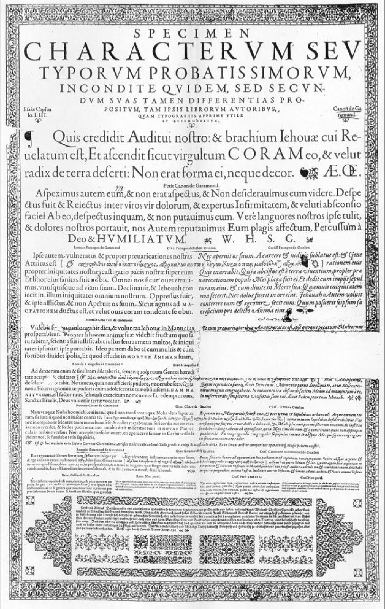
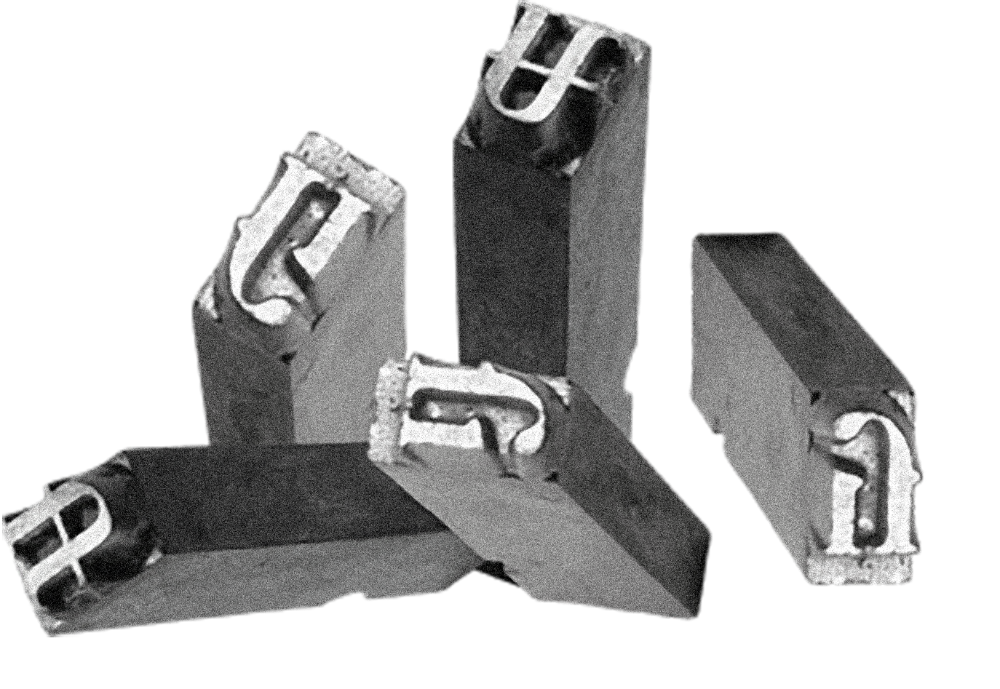

EB
G
a
r
a
m
o
n
d
[
Репродукция знаменитого шрифта, стоявшего почти у самых истоков типографской антиквы
]
1. Клод Гарамон, 1490-1561 гг.
2. Berner specimen, 1592 г.
3. Металлические литеры
{
Пуансонист эпохи французского Ренессанса, создатель оригинального рисунка шрифта Прототип гарнитуры, содержит оригинальную антикву Гарамона и курсив Робера Гранжона Металлические литеры с лигатурами «fi» и «ft», использовавшиеся при ручном наборе текста}
«Величественые формы высокого
Ренессанса с гуманистическим
наклоном осей, умеренным конт-
растом и длинными выносными
элементами»
Regular
Medium
SemiBold
Bold
ExtraBold
Роберт Брингхерст
{
Garamond — антиква старого стиля, сохранившая элементы каллиграфии ширококонечным пером
}
{
Гарнитура содержит расширенный набор глифов — для одной только строчной «а» представлено 29 диакритиков
}
В современой типографике шрифты
семейства широко используются
как универсальная текстовая гарни-
тура для книжного, журнального,
а также газетного набора
Italic
Medium Italic
SemiBold Italic
Bold Italic
ExtraBold Italic